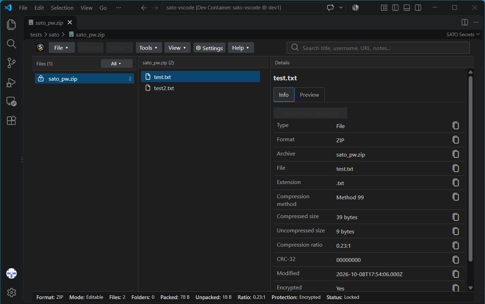
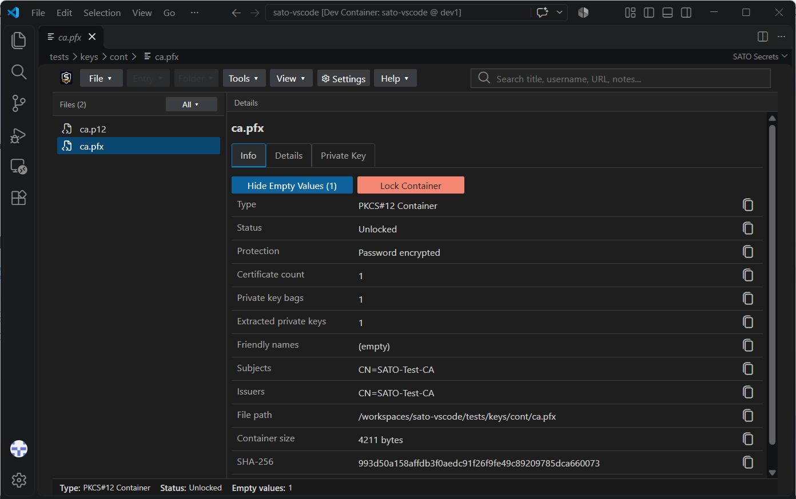
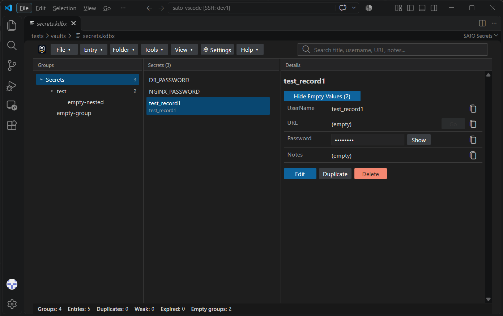

SATO Secrets VSCode-compatible extension to manage vaults, archives and crypto files.
SATO brings multiple tools together in one convenient UI, eliminating the need to work with numerous commands.
Archive View


